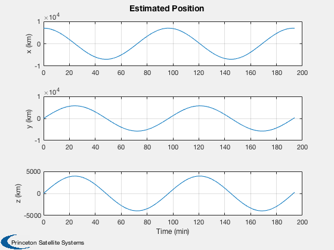
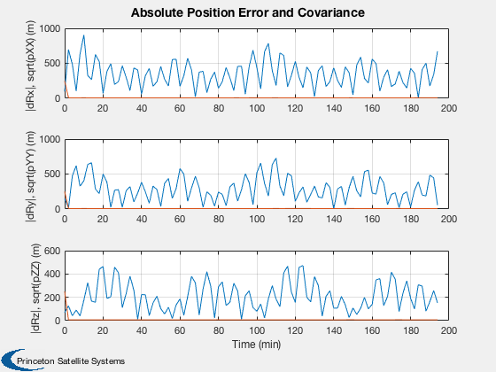
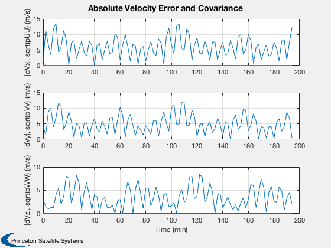
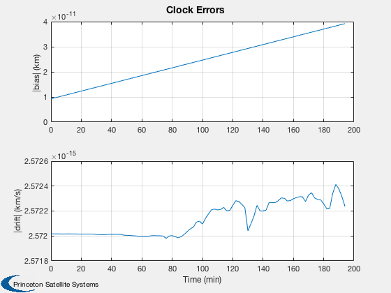
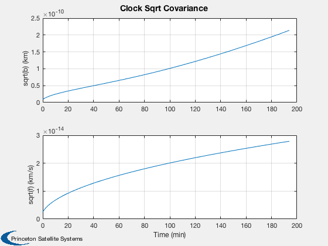
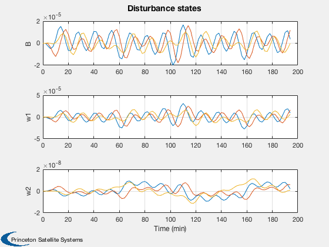
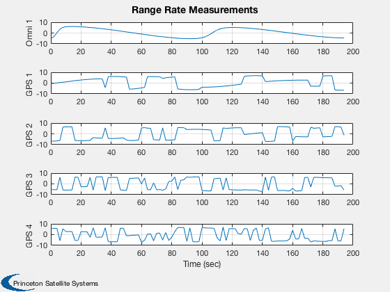
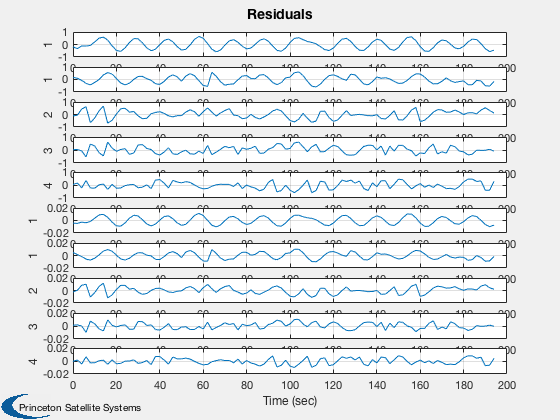
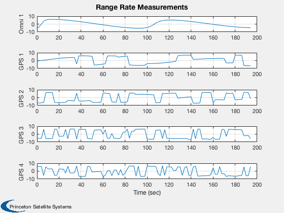
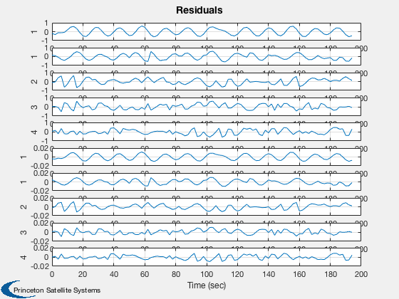

Test the orbit Kalman Filter with omni and GPS measurements.
The simulation and the filter both use the same RHS, FOrbKF, but the simulation uses more terms in the gravity model. ------------------------------------------------------------------------ See also CDKF45, OrbitKFRHS, HRangeMeasurement, RangeMeasurement, GPSReceiver, and FOrbKF, Plot2D, TimeGUI, Cross, RK4, RK45, Date2JD, JD2T, LoadGravityModel, OrbRate, El2RV, Period, EarthRot, EarthRte, GPSSatellite, Omni ------------------------------------------------------------------------
Contents
%------------------------------------------------------------------------------- % Copyright (c) 2001-2003 Princeton Satellite Systems, Inc. All rights reserved. %-------------------------------------------------------------------------------
Global for the time GUI
%------------------------ global simulationAction simulationAction = ' '; printIt = 0;
Set up the orbit
%-----------------
el = [7000 0.6 0 0 0.0001 0];
p = Period( el(1) );
[r, v] = El2RV( el );
Initial estimates
%------------------
dT = 120;
jD = Date2JD([2001 3 20 13 15 1]);
Initialize the sim
%------------------- nOrbits = 2; nSim = ceil(nOrbits*p/dT); bias = 0.01/3e5/3600; % 0.01 sec/hr one sigma biasDrift = bias/3600; x = [r;v;bias;biasDrift]; t = 0; useOmni = 1; useGPS = 1; gravityModel = LoadGravityModel( 'load file', 'GEMT1.geo' ); simData = struct('jD',jD,... 'gravityModel',gravityModel,... 'highFidelity',1,... 'nTess',6,... 'nZonal',6,... 'planetaryOn',1,... 'aExt',[0;0;0]);
For print outs
%--------------- if( bias > 0 ) prefix = 'Clock'; else prefix = ''; end
Set up omni measurements
%---------------------------------------------------
rStationEF = {};
vStationEF = {};
rStationEF{1} = [6378.165;0;0];
vStationEF{1} = Cross( [0;0;EarthRte(jD)], rStationEF{1} );
nOmni = length(rStationEF);
rOmni = [0.001 0;0 1e-6].^2;
omni = struct();
omni.power = 5;
omni.range1Sigma = 0.001;
omni.rangeRate1Sigma = 1e-6;
omni.minimumAngle = 3*pi/180;
Set up GPS
%------------------------------------------------------- nGPS = 4; useReceiver = 1; gPSReceiver = struct(); gPSReceiver.tSamp = 1; gPSReceiver.minimumAltitude = 100; gPSReceiver.power = 5; gPSReceiver.range1Sigma = 0.001; % noise in model gPSReceiver.rangeRate1Sigma = 1e-6; rGPS = [0.001 0;0 1e-6].^2; GPSReceiver( 'initialize', gPSReceiver ); nMeas = useOmni*nOmni+useGPS*nGPS;
Initialize the estimator
%------------------------- dR = 0.25; dV = dR/1000; d = struct; d.p = diag([dR*[1 1 1] dV*[1 1 1] bias biasDrift].^2 ); mu = 3.98600436e5; rE = r + [0.1;-0.15;0.07]; vE = v + [0.001;-0.004;0.003]; d.x = [rE;vE;0;0]; d.propagator = 'RK45'; d.q = diag([0 0 0 (0.001*mu/7000^2)*[1 1 1] 0.1*bias 0.1*biasDrift].^2); d.fName = @OrbitKFRHS; d.fData = struct('dFName',@FOrbKF,... 'nStates',17,... 'jD',jD,... 'highFidelity',1,... 'gravityModel',gravityModel,... 'nTess',2,... 'nZonal',2,... 'planetaryOn',1,... 'aExt',[0;0;0]); d.hName = @HRangeMeasurement; if (d.fData.nStates == 17) d.x = [d.x;zeros(9,1)]; pDist = 1e-7*[1 1 1e-3]; d.p = diag ([dR*[1 1 1] dV*[1 1 1] bias biasDrift pDist pDist pDist].^2 ); d.q = diag([0 0 0 (0.001*mu/7000^2)*[1 1 1] 0.1*bias 0.1*biasDrift 0.1*[pDist pDist pDist]].^2); end d.xMeas = d.x; d.pMeas = d.p; d.hLast = 0.1*dT; d.nIterations = 2; d.tol = 1e-6; range = []; rangeRate = []; d.r = {}; j = 0;
Plotting arrays
%----------------
xPlot = zeros(length(x),nSim);
xEPlot = zeros(length(d.x),nSim);
pPlot = zeros(length(d.x),nSim);
rPlot = zeros(nMeas*2,nSim);
resPlot = zeros(nMeas*2,nSim);
Numerical integration
%----------------------
tol = 1e-6;
hLastT = 0.1*dT;
hLastE = 0.1*dT;
Initialize the time display
%---------------------------- [ ratioRealTime, tToGoMem ] = TimeGUI( nSim, 0, [], 0, dT, 'Orbit Kalman Filter' ); for k = 1:nSim % Display the status message %--------------------------- [ ratioRealTime, tToGoMem ] = TimeGUI( nSim, k, tToGoMem, ratioRealTime, dT ); % Measurement from earth stations %-------------------------------- if useOmni mEarth = EarthRot( JD2T( jD ) )'; for i = 1:nOmni j = j + 1; % Skip omni model and idealize ground stations as always available [range(j,1), rangeRate(j,1)] = RangeMeasurement( x(1:3,:), x(4:6,:), x(7:8,:)*3e5, mEarth*rStationEF{i}, mEarth*vStationEF{i} ); range(j,1) = range(j,1) + omni.range1Sigma*randn; rangeRate(j,1) = rangeRate(j,1) + omni.rangeRate1Sigma*randn; d.r{j} = rOmni; d.hData(j).rSource = rStationEF{i}; d.hData(j).vSource = vStationEF{i}; d.hData(j).rSourceECI = mEarth*rStationEF{i}; d.hData(j).vSourceECI = mEarth*vStationEF{i}; end end % useOmni if useGPS % Measurements from GPS %---------------------- if( useReceiver ) % Use GPSReceiver model %------------------------------------- GPSReceiver( 'update', struct( 'r',x(1:3),'v', x(4:6), 'jD', jD, 'clockError', x(7:8) ) ); gPSData = GPSReceiver( 'get output' ); if gPSData.nSatellites < nGPS nGPS = gPSData.nSatellites; end for i = 1:nGPS j = j + 1; range(j,1) = gPSData.range(i); rangeRate(j,1) = gPSData.rangeRate(i); d.hData(j).rSourceECI = gPSData.rGPS(:,i); d.hData(j).vSourceECI = gPSData.vGPS(:,i); d.r{j} = rGPS; end else % Skip GPS model and idealize GPS satellites as always visible [r, v] = GPSSatellite( jD, 'eci' ); for i = 1:nGPS j = j + 1; [range(j,1), rangeRate(j,1)] = RangeMeasurement( x(1:3), x(4:6), x(7:8), r(:,i), v(:,i) ); range(j,1) = range(j,1) + gps.range1Sigma*randn; rangeRate(j,1) = rangeRate(j,1) + gps.rangeRate1Sigma*randn; d.hData(j).rSourceECI = r(:,i); d.hData(j).vSourceECI = v(:,i); d.r{j} = rGPS; end end % useReceiver end % useGPS % External disturbance %--------------------- simData.aExt = 1e-7*[0;0;5] + 1e-6*[1;1;1]*sin(OrbRate(el(1))*t); % Update the plot array %---------------------- xPlot(:,k) = x; pPlot(:,k) = diag(d.p); xEPlot(:,k) = d.x; % Kalman Filter %-------------- d.secFromStart = t; d.time = jD; d.meas.z = [range;rangeRate]; d.dT = dT; d = CDKF45( d ); % Update the plot array %---------------------- rPlot(:,k) = [range;rangeRate]; resPlot(:,k) = d.residual; % Propagate %---------- switch d.propagator case 'RK45' [x, hLastT] = RK45( @FOrbKF, x, hLastT, dT, 0, tol, t, simData ); case 'RK4' x = RK4( @FOrbKF, x, dT, t, simData ); end t = t + dT; jD = jD + dT/86400; range = []; rangeRate = []; d.r = {}; d.hData = []; d.meas.z = []; j = 0; % Time control %------------- switch simulationAction case 'pause' pause simulationAction = ' '; case 'stop' return; case 'plot' break; end end t = ( 0:(nSim-1))*dT/60; dX = 1000*abs(xPlot(1:3,:) - xEPlot(1:3,:)); dV = 1000*abs(xPlot(4:6,:) - xEPlot(4:6,:)); P = sqrt(pPlot); yCL = char({'|dRx|, sqrt(pXX) (m)','|dRy|, sqrt(pYY) (m)','|dRz|, sqrt(pZZ) (m)',... '|dVx|, sqrt(pUU) (m/s)','|dVy|, sqrt(pVV) (m/s)','|dVz|, sqrt(pWW) (m/s)',... ' sqrt(b) (km)','sqrt(f) (km/s)'}); Plot2D( t, xEPlot(1:3,:), 'Time (min)', ['x (km)';'y (km)';'z (km)'], 'Estimated Position' ); Plot2D( t, [dX; 1000*P(1:3,:)], 'Time (min)', yCL(1:3,:),... 'Absolute Position Error and Covariance','lin',['[1 4]';'[2 5]';'[3 6]'] ); Plot2D( t, [dV; 1000*P(4:6,:)], 'Time (min)', yCL(4:6,:),... 'Absolute Velocity Error and Covariance','lin',['[1 4]';'[2 5]';'[3 6]'] ); Plot2D( t, abs([xPlot(7:8,:) - xEPlot(7:8,:)]), 'Time (min)', [' |bias| (km) ';'|drift| (km/s)'],'Clock Errors' ); Plot2D( t, P(7:8,:), 'Time (min)', yCL(7:8,:), 'Clock Sqrt Covariance' ); if size(xEPlot,1) == 17 Plot2D( t, xEPlot(9:17,:), 'Time (min)', ['B ';'w1';'w2'],'Disturbance states',... 'lin',['[1 4 7]';'[2 5 8]';'[3 6 9]']); Plot2D( t, P(9:17,:), 'Time (min)', ['Bias ';'Harm1';'Harm2'],... 'Disturbances Covariance','lin',['[1 4 7]';'[2 5 8]';'[3 6 9]']); end yL = {}; nL = {}; for k = 1:useOmni*nOmni yL{k} = ['Omni ' num2str(k)]; nL{k} = num2str(k); end for k = (useOmni*nOmni+1):(nMeas) yL{k} = ['GPS ' num2str(k-useOmni*nOmni)]; nL{k} = num2str(k-useOmni*nOmni); end Plot2D( t, rPlot(1:nMeas,:), 'Time (sec)', yL,'Range Measurements' ); Plot2D( t, rPlot(nMeas+1:end,:), 'Time (sec)', yL,'Range Rate Measurements' ); Plot2D( t, resPlot, 'Time (sec)', {nL{:} nL{:}},'Residuals' ); TimeGUI('close'); %--------------------------------------     

  
 